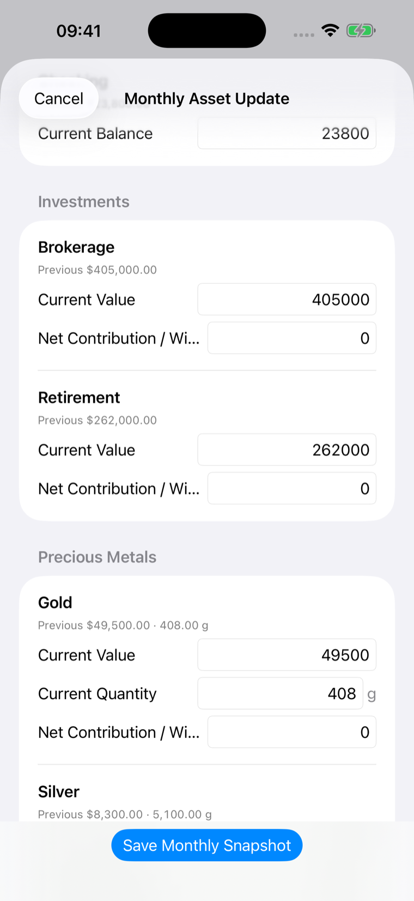
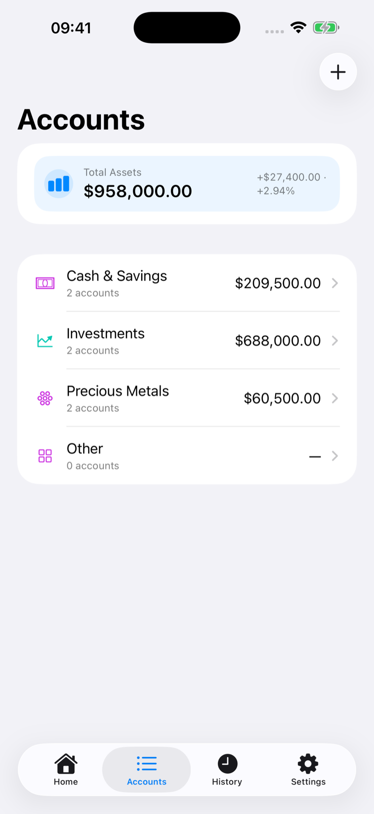
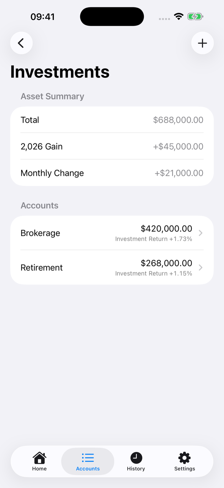
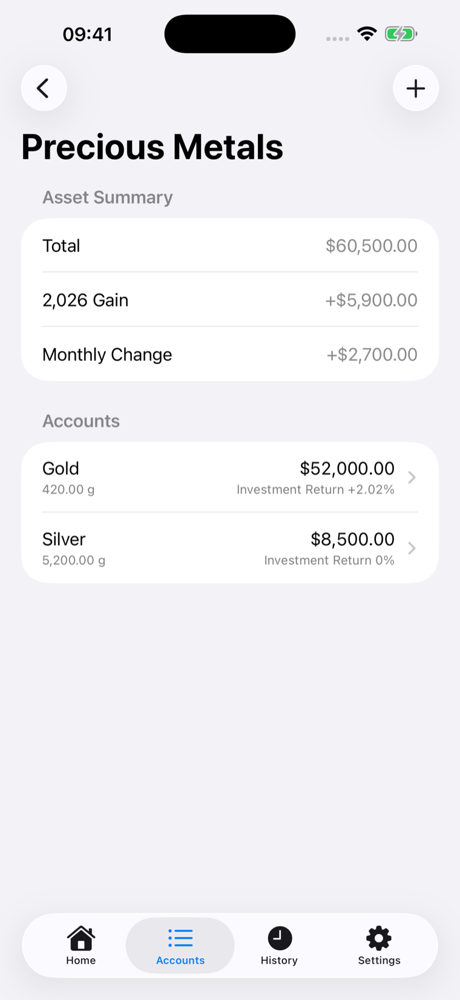
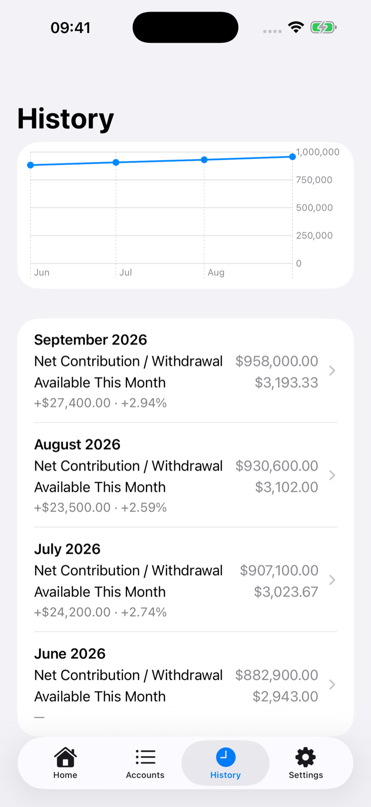

Know what you can spend this month.
Update your assets once a month. FIRE Paycheck turns them into one clear monthly spending number.

Plan with one clear number.
Instead of tracking every purchase, update your assets once a month and see the amount available for your plan.
Update once. Move on.
Previous values are carried forward automatically. Update only what changed, then save one monthly snapshot.
- Previous values carried forward
- Net contribution defaults appropriately
- One-screen monthly flow
- Designed to take less than a minute for a typical monthly update

Create the structure once.
Cash & Savings, Investments, Precious Metals, and Custom Categories—create the structure once, then reuse it every month.

Separate contributions from gains.
Record current value and net contributions or withdrawals so FIRE Paycheck can distinguish new money from investment performance.

Track value and quantity.
Keep both the current value and quantity of gold, silver, or other quantity-based investments.

See how things change over time.
Monthly snapshots give you a simple history of your assets, contributions, gains, and changes.

This month’s amount, at a glance.
See this month's available amount without opening the app.
No account. No tracking. No detours.
New in 1.1: Optional App Lock uses authentication provided by your device—Face ID, Touch ID, or device passcode, depending on its settings.
FIRE Paycheck requests authentication through Apple’s LocalAuthentication framework. The app receives only the authentication result; it does not receive or store Face ID, Touch ID, or device passcode data.
Your backup, when you want it.
Export your backup when you want, then restore it on another device. The system file picker lets you choose the destination, including iCloud Drive if you prefer.
Make the number useful.
FIRE Paycheck is a personal planning and tracking tool for iPhone.